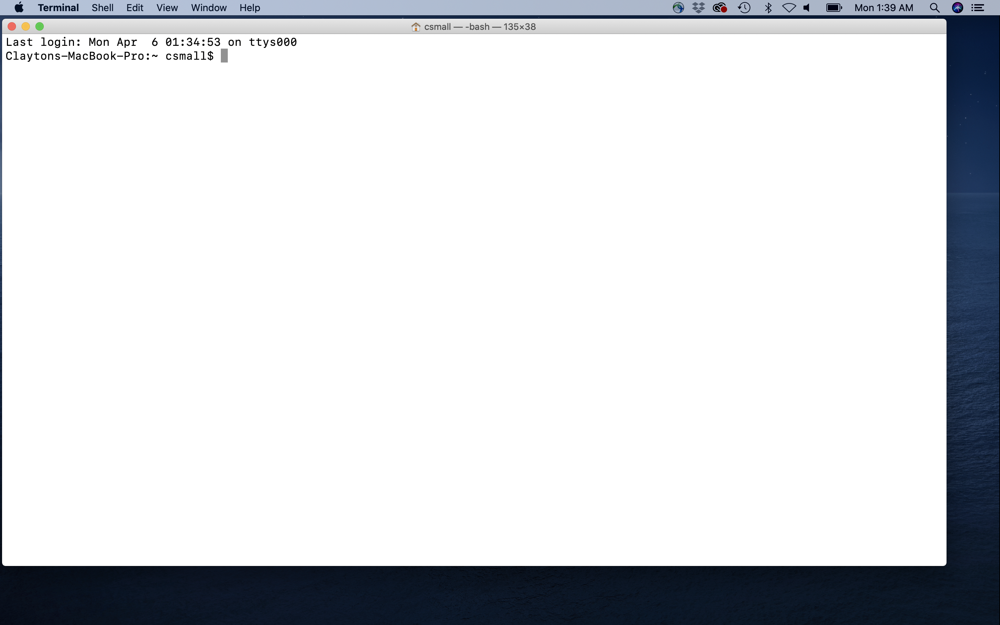
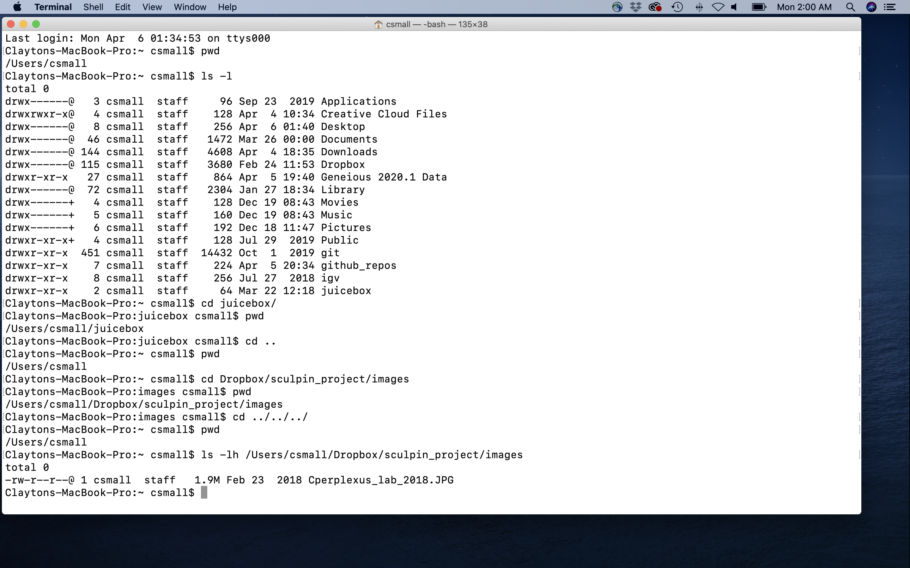

4 Organizing and manipulating data files
4.1 Introduction
Many of you will already be familiar with data file organizaiton, editing, and formatting for analysis. If so, much of the following material may be review. If not, some of the following guidelines and tools should prove to be quite useful. In biology, and many other fields, primary data are routinely stored as “flat” text files. The exact formatting depends on the type of data, of course, but often we are working with text files organized into rows and columns. Rows can naturally be defined by lines in a file, and columns can be defined by separators (also called delimiters) such as spaces, tabs, or commas, to name a few commonly used ones. Fortunately there are some very powerful and simple-to-use (with a little practice) tools that can be invoked directly from a computer’s command line, or included in written “scripts” that your computer’s operating system can interpret upon you running them. These command line tools are now nearly ubiquitous on all personal computer platforms. Computers running a LINUX operating system allow direct access to these tools via the command line, as does the macOS operating system of Apple computers via the Terminal. Computers running Microsoft Windows 10 now also facilitate use of these conventional “UNIX tools” through a Windows Subsystem for Linux.
In the following sections, we provide a very brief introduction to using some of these tools in order to organize your data files, parse them for information, and perform some basic text manipulations. Mastering these activities is not necessary for this course (in fact, many of the text manipulation tasks can be done in R!), but if you learn to adopt at least some of these skills you will become a better, more organized analyst, and it will help you become comfortable with the command line and programming in general.
4.2 Navigating file systems from the command line
4.2.1 Access to the command line
The first step to using command line tools is to get access to the command line! On Mac and Linux systems you can simply do this by finding and opening the Terminal application. On Windows 10 systems, you’ll have to install a Linux Bash Shell if you haven’t already. To do this you will need to follow the instructions here: https://itsfoss.com/install-bash-on-windows/ When you get to the point of choosing the Linux distribution to install, I recommend Ubuntu.
At this point you should have command line access through a terminal prompt, which should look something like my Mac Terminal below: 
You are now ready to navigate and explore files simply by typing!
4.2.2 Navigating directories and files
When you are at the command line, just think of your computer as you would if you were navigating using a graphical application (e.g. Mac Finder or Windows Explorer). You are always in a directory in your file system, and you can move to any other directory by typing the appropriate command and destination, then hitting Enter.
The first crucial UNIX command to learn is pwd. This command stands for “print working directory,” and it will literally print the path of the directory you are currently in.
Another important command is ls. This lists the files and directories (by default) in your working directory. If you specify a different directory, it will list the files and/or directories there. Most UNIX commands (and indeed command-line programs in general), can be run with options. One way to invoke an option is to type a “flag” along with the command. In the case of ls, we can type ls -l, for example, which will print the output line-by-line. We can also add another flag: ls -lh (equivalent to ls -l -h), which will print items line-by-line but also make sure the item sizes are “human readable.” If you ever have questions about how to use a UNIX program, including the flags and other options, you can type man program_name and a wonderful help manual will appear. To exit and return to the command prompt, just hit “q”. These man pages are extremely useful and should be your first go-to if you need information for a particular command. Please use these regularly!
The command cd will change your location from the current directory to another directory. Like many other programs (UNIX and otherwise) requiring you to input directory and file locations, with cd you can specify your desired location using either the absolute or relative path. An absolute path is the full “address” of a directory or file, starting from the root of your file system. An example of an absolute path to a directory in my file system is /Users/csmall/Dropbox/sculpin_project/images/. Regardless of where my current working directory is in my file system, I can change to this images/ directory using cd and the full path. I can also use a relative path, which is a sort of “shortcut,” to specify the location of a directory or file. Let’s say I am in /Users/csmall/Dropbox/BiostatsFound_S2020/ and I want to get to the images/ directory above. I could type cd ../sculpin_project/images, which uses a relative path to take me “up” one directory (as denoted by ../) into Dropbox/ and back “down” into sculpin_project/images. In fact, .. is a special file in every directory that just means “the directory above.” The special file . is the current directory. And to mention one final useful designation for navigation shortcuts, you can use the ~ to denote your home directory.
The schematic below should help you visualize how to think about file system navigation from the commmand line: 
And for another example, take a look at this series of navigation commands from my terminal and see if you can follow along: 
If you want to create a new directory, you can use the mkdir command, including the desired name of the new directory. By default this will create the directory in your current working directory, but you can use absolute or relative paths to instead write the directory somewhere else. If you want to delete an empty directory, rmdir is the appropriate command.
Now let’s briefly cover some UNIX commands that are useful for managing files. Some of these apply to directories as well, which I will point out as we go. The command touch can be used to create a new, empty file, which you can add to using a plain text editor. Examples of popular plain text editors with advanced user interfaces are BBEdit and Atom. You can also use command line text editors, such as nano, emacs, and vim. Most UNIX/LINUX systems have nano installed by default. To copy or change the name and/or location of a file (or directory), use cp and mv commands, respectively. Note that by using absolute or relative paths, you can specify where you want the file or directory to end up. Be especially careful with these, however, because you will overwrite any existing file or directory if you specify the same name and location. Another command you should be extremely cautious with is rm, which removes (permanently deletes) a file. rm -r can be used to delete a non-empty directory AND all of its contents.
In many cases you will want to look at files, or parts of them at least, from the command line. cat will print the entire contents of a file, but can also be used to combine (“concatenate”) multiple files in a line-wise manner. less and more will display specific lines of a file (starting with the first ones), with single- or multi-line “scrolling,” respectively, activated using the return or down-arrow keys. To leave the display, you need to hit the “q” key. head and tail will display the first or last, respectively, n lines of the file, where n is provided as a flag (e.g. head -200 file.tsv). The “word count” command wc can quantify elements of a text file in various ways, but one common application is wc -l, which counts the number of lines in a file.
An aside: If you are working from the command line and want to terminate a process (say you accidentally start a task that will take way too long), press Ctrl-C.
4.2.3 Useful UNIX commands for file manipulation
In many cases you will want to search for specific characters or combinations of characters, and do various things with that information. Maybe you want to isolate the lines of a file that contain the query, or perhaps you want to count how many lines contain the query. The tool grep is extremely useful in this regard. We don’t have time for a comprehensive dive into the utilities of grep, but a few common applications are worth mentioning. Character patterns we search for using grep may or may not involve special characters that are not interpreted literally. Here we will discuss just a few common cases of grep searches and the special characters involved. Some examples of these special characters include ^ (beginning of a line), $ (end of a line), . (any single character except a newline), * (zero or more instances of the preceding character), and \s (any white space). The standard syntax for grep from the command line is grep "expression" filename. So, if you wanted to return all of the lines in the data file zfish_data.tsv (assuming it is in the current directory) that begin with “embryo_10”, you could try grep "^embryo_10" zfish_data.tsv. This search would also (unintentionally) find lines beginning with “embryo_100” or “embryo_101”, etc., if they exist. So, you have to be careful, and learning the rules just takes practice. In this case grep "^embryo_10\s" zfish_data.tsv would achieve the desired result, assuming that there is a whitespace delimiter between fields (“columns”) in the data file. Useful flags for grep include -c (which counts the number of lines containing the query), -v (which returns the lines that do not contain the query), and -n (which prints the line number for each line containing the query). I encourage you to look at many different grep use cases online as your demand for complex searches grows.
The program sed has reasonably complex applications, but is commonly used as a sort of “search and replace” tool. The syntax for sed use is similar to grep, except that the query and replacement expressions are organized (with other information) using slashes. For “search and replace” functionality, that syntax looks like this: sed 's/query/replacement/flag' filename. One common option for the “flag” component is “g”, meaning “global”, which replaces all instances. If no flag designation is made only the first instance in the file is replaced. Building on our toy example from above, sed 's/^embryo_/^larva_/g' zfish_data.tsv would perform a global replacement and print the output to the terminal. To change the contents in the original file on the fly, including sed -i would do the trick, but is riskier than redirecting the output to a new file.
cut is quite straightforward, and can be used to isolate individual fields (think of them like “columns”) from a text file, provided the fields are consistently separated by a delimiter on each line. So, if I had a comma-separated file and I just wanted the first two columns I could type cut -f1,2 -d"\t" filename. Note that if you don’t specify a delimiter using the -d flag, then it is assumed to be tab-delimited. If you want to bring together fields in separate files, join can be used to accomplish this. The two files should have equivalent rows, however, for this action to work properly.
If you want to sort text files alphanumerically, in a field-wise fashion, sort is quite useful. If a file contains a single field, minimal specification is required, aside from tuning numerical sorting. For example, if you want to sort numerically, use the -n flag, and if you want to sort from largest to smallest, add the -r flag. If you want to sort a multi-field file based on just one field, you can use the “key” flag. For instance, if you have a tab-delimited file and want to sort by the second field in reverse numerical order, sort -k2,2 -nr filename.tsv would give you the desired result. Finally, if you want to eliminate lines with the same value for a given field, you can use the -u “unique” flag.
The UNIX program awk is an extremely powerful tool, and can itself be used essentially as a mini programming language. We will not get into the myriad uses of awk here, but the reference at the bottom of the chapter is a great resource if you want to learn more. awk is extremely efficient at parsing and capturing text files in a column-wise manner, with the ability to also evaluate logical statements applied to rows. The structure of awk commands is more complex than that of other UNIX programs we have discussed, but it is still very intuitive. One unique feature is that awk contains its own internal functions, which are typed inside curly braces. The “print” function can be used to extract fields, much like cut. For instance, awk -F: '{print $1,$6}' filename.tsv would print the first and sixth field from filename.tsv, assuming a “:” delimiter. With awk, fields are specified using the $ character. If you want also to select only specific rows from a set of columns (like those with a certain value), you can incorporate logical operators. In the above example if we had wanted fields 1 and 6, but only those rows with a value of at least 610 in field 4, we could type the following awk -F: '$4 >= 610 {print $1,$6}' filename.tsv. Again, this is just scratching the surface with awk, which boasts a great deal of potential for your text file manipulation needs.
4.2.3.1 A quick review of key UNIX commands for text file searching and manipulation
grep - searches a file for characters and character combinations
sed - stream edits characters and character combinations
cut - isolates specific fields (“columns”) from a file using a delimiter
join - combines fields (“columns”) from multiple files with equivalent rows
sort - orders the rows in a file based on one or more fields
awk - flexibly parses, evaluates, and selectively prints row- and column-wise
4.2.4 A quick word on pipes and carrots
One very convenient feature of UNIX commands is that you can control the flow of input and output from one command to another using the | (“pipe”) character. For instance, I may want to search an entire file for rows that begin with “fish-1”, and then replace the “-” with “_”. To do this I could do something like cat file.tsv | grep "^fish-1" | sed 's/fish-1/fish_1/g' This, of course, would print the output to the terminal, but I could actually capture that output into a file using the > character. cat filename | grep "^fish-1" | sed 's/fish-1/fish_1/g' > ./newfile.tsv would write this new file to my current working directory. Furthermore, if you want to append lines of text to an existing file, the “double sideways right-pointing carrot” character >> can be used.
The above lessons on UNIX commands for file manipulation truly just scratch the surface of what can be accomplished at the command line and in “shell scripts.” You certainly will have further questions and be hungry for more, but we simply don’t have time during this course. But to work on your UNIX skills for now, check out Ex1_Unix_Intro.html (on Canvas). We need to move on to R now, but at the bottom of this chapter are some UNIX command resources I have found to be especially useful.
4.3 Data file and data file entry dos and don’ts
Do store a copy of your data in a nonproprietary format, such as plain ASCII text (aka a flat file). This is especially important if you are using tools (like UNIX commands) to parse and manipulate the files. Formats like Microsoft Excel are not acceptable as input for many analysis tools, and not everyone has access to proprietary software.
Do leave an un-edited copy of an original data file, even when main analyses require an edited version.
Do use descriptive names for your data files and variables, and use them consistently!
Do maintain effective metadata about the data.
Do add new observations to a data file as rows.
Do add new variables to a data file as columns.
Don’t include multiple data types in the same column.
Don’t use non-alphanumeric characters (other than the underscore) in file or directory names.
Don’t use spaces, tabs, commas, colons, semicolons, or other characters commonly used as field (column) delimiters in names of individual data entries. For example, don’t use something like March 8 as a value for date in a data set.
Don’t copy and paste data directly from rich-text-formatted files (like Microsoft Word) into primary data files.
4.4 Exercises associated with this chapter:
- Exercise 1 (file:
Ex1_Unix_Intro.html)
4.5 Additional learning resources
http://mally.stanford.edu/~sr/computing/basic-unix.html - A nice “cheat sheet”
http://korflab.ucdavis.edu/Unix_and_Perl/ - Outstanding tutorial by Keith Bradnam and Ian Korf
https://www.datacamp.com/courses/introduction-to-shell-for-data-science - DataCamp tutorial
https://www.gnu.org/software/gawk/manual/gawk.html - A comprehensive guide to
awk